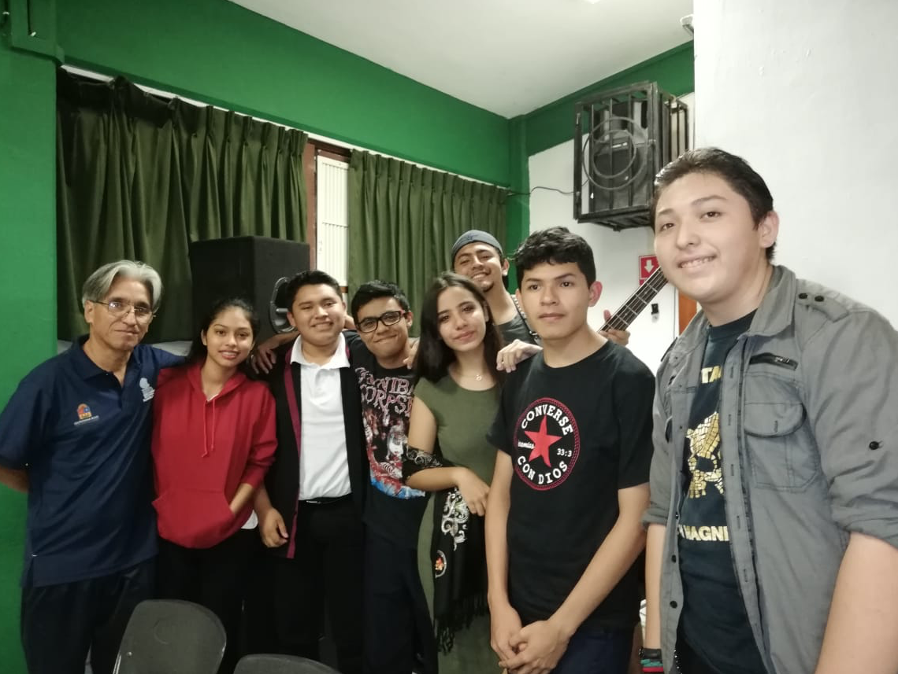

Este es el Praescolar en el que estoy, es uno de los mejores, y su profesor Luis Hernandez, es uno de los buenos profesores que imparten este paraescolar, este se caracteriza por enseñar sobre la música y el como tocar el instrumento que más le agrade al alumno. En esta ocasión el paraescolar de música se ha estado encargando de la preparación de conciertos. este con la finalidad de que los alumnos aprendan sobre l orgnización de eventos, ya sea en decoración, publicidad o instalación del equipo.
Crear en los alumnos las bases para la comprensión de los fenómenos musicales. Fomentar el interés por las actividades musicales a través de la práctica instrumental y/o estudios teóricos. Conocer y comprender mejor las diversas formas de expresión cultural universal. Involucrar a los estudiantes interesados en las manifestaciones culturales de nuestro municipio y que las vean como parte de nuestro patrimonio cultural. Utilice una variedad de fuentes de información (partituras, recursos informáticos, Internet, audiovisuales y otros recursos gráficos, etc.) para apoyar la práctica musical en el aula. Satisfacer las necesidades del público en general de cultura musical práctica.